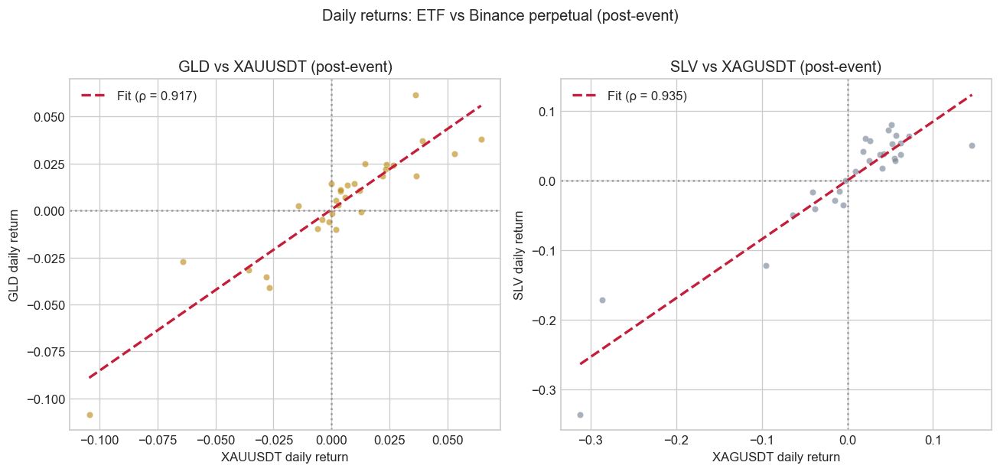
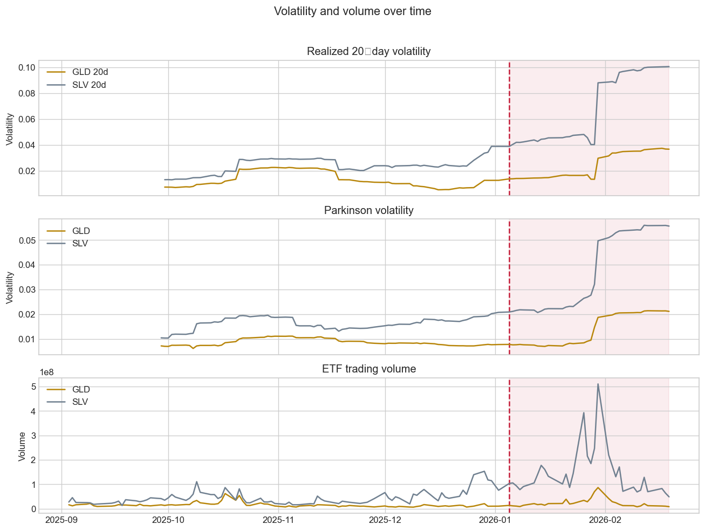
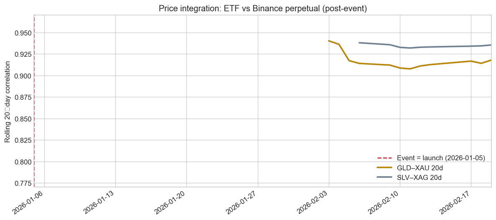
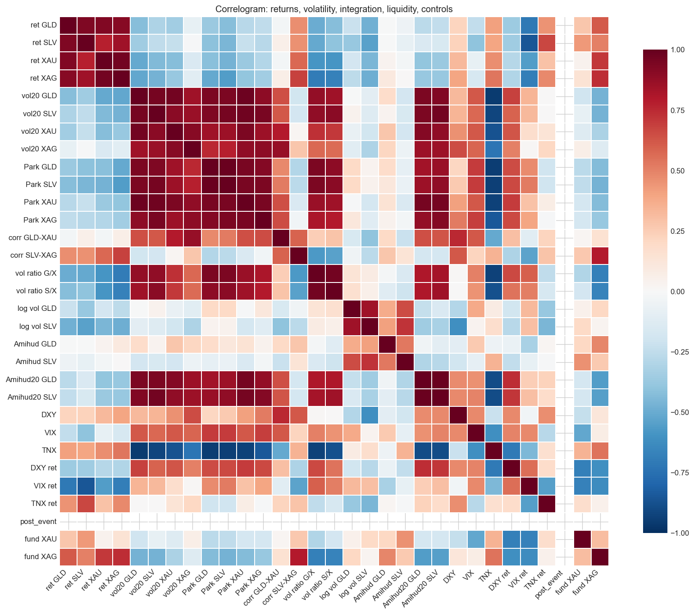
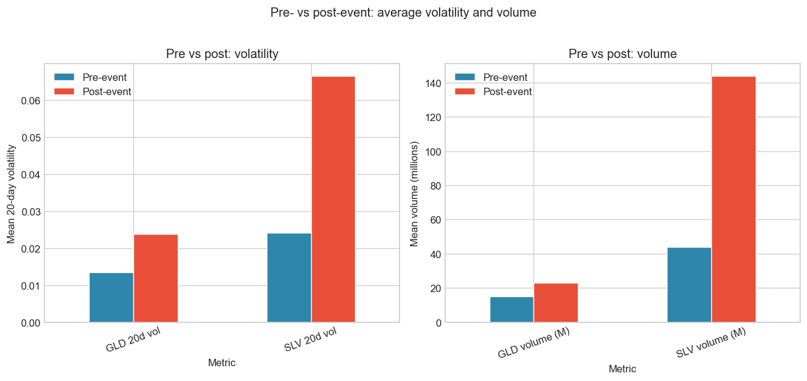
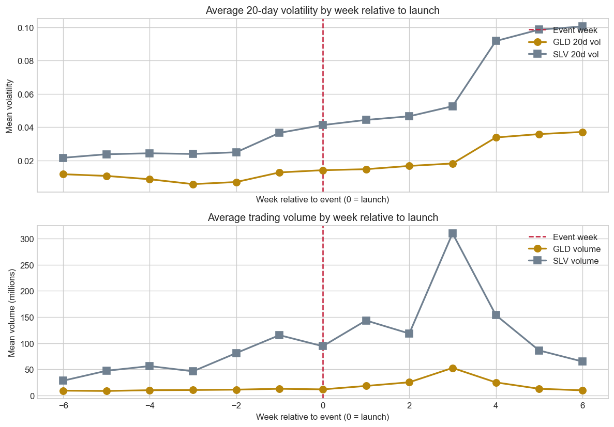
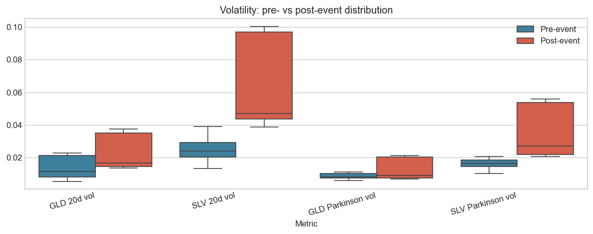

Daily: 118 rows (features_daily.csv)
Hourly: 4104 rows (features_hourly.csv)
1-minute: 67074 rows (features_1m.csv)Binance Gold & Silver Perpetuals and ETF Markets
1. Introduction and research question
Research question.
Did the introduction of Binance TRADFI gold and silver perpetual futures change volatility, liquidity and price integration in the corresponding precious metal ETF markets (GLD and SLV)?
Main hypotheses (testable with pre/post data).
- H1 (volatility): Realized volatility of gold and silver ETFs increased after the launch of Binance XAUUSDT and XAGUSDT TRADFI perpetual futures.
- H2 (liquidity): Trading activity and liquidity of GLD and SLV improved (higher volume, lower Amihud illiquidity) after the launch.
We do not formulate a formal hypothesis on “integration increased”, because Binance returns do not exist before the launch, so we cannot compute pre-event GLD–XAU or SLV–XAG correlation or beta. We still report post-event rolling correlation and integration metrics as descriptive evidence (how strongly ETF and perpetual co-move after the launch), but we do not test a pre/post change for integration.
How we identify the impact on the market. We use an event study with (i) pre/post comparison of means and t-tests, and (ii) OLS regressions where the outcome is volatility (or liquidity proxy) and the key regressor is a post-event dummy (post_event = 1 after the launch date), plus controls (DXY, VIX, 10Y yield changes). The coefficient on post_event is our estimate of the change in the outcome after the launch, conditional on controls. We do not have a control group (e.g. other assets without a new derivative), so we do not use difference-in-differences; the design is a single-market before/after event study with controls. See Literature/LITERATURE_METHODS.md for a comparison with the Bitcoin futures paper (Augustin et al., Management Science 2023), which uses DiD.
2. Data and feature set
We use three pre‑built datasets produced by build_features.py:
- Daily panel (
features_daily.csv): 118 trading days, 87 variables. Used for the event study (pre/post comparison, regressions). - Hourly panel (
features_hourly.csv): one row per hour over the same calendar span; Binance 1m aggregated to hourly, ETF/controls forward-filled from daily. - 1-minute panel (
features_1m.csv): one row per Binance XAUUSDT 1m candle with daily ETF/controls merged by date. Used to satisfy the course requirement of ≥10,000 observations.
Raw data sources and variable definitions are in DATA_DESCRIPTION.md, VARIABLES_DESCRIPTION.md, and DATA_ROW_COUNTS_AND_PERIODS.md. A mapping of which variables are used where (and how to extend usage) is in VARIABLE_USAGE.md.
(118, 89)| px_gld_open | px_gld_high | px_gld_low | px_gld_close | vol_gld | px_slv_open | px_slv_high | px_slv_low | px_slv_close | vol_slv | ... | funding_xau_change | funding_extreme_xau | oi_xau_change | funding_xag_change | funding_extreme_xag | oi_xag_change | dxy_ret | vix_ret | tnx_ret | dgs10_ret | |
|---|---|---|---|---|---|---|---|---|---|---|---|---|---|---|---|---|---|---|---|---|---|
| Date | |||||||||||||||||||||
| 2025-09-02 | 320.820007 | 325.920013 | 320.239990 | 325.589996 | 21247500.0 | 36.630001 | 37.169998 | 36.430000 | 37.150002 | 35875300.0 | ... | NaN | 0 | NaN | NaN | 0 | NaN | NaN | NaN | NaN | NaN |
| 2025-09-03 | 327.760010 | 329.450012 | 326.730011 | 328.140015 | 16062200.0 | 37.330002 | 37.639999 | 37.180000 | 37.340000 | 27291200.0 | ... | NaN | 0 | NaN | NaN | 0 | NaN | -0.002646 | -0.048936 | -0.015552 | -0.014118 |
| 2025-09-04 | 327.029999 | 327.559998 | 325.350006 | 326.690002 | 11703100.0 | 37.200001 | 37.220001 | 36.630001 | 36.930000 | 45258500.0 | ... | NaN | 0 | NaN | NaN | 0 | NaN | 0.002138 | -0.066375 | -0.008346 | -0.011919 |
| 2025-09-05 | 329.529999 | 331.440002 | 328.929993 | 331.049988 | 16065200.0 | 37.410000 | 37.599998 | 36.970001 | 37.209999 | 25435500.0 | ... | NaN | 0 | NaN | NaN | 0 | NaN | -0.005915 | -0.007874 | -0.021787 | -0.016929 |
| 2025-09-08 | 333.660004 | 335.670013 | 333.230011 | 334.820007 | 18617300.0 | 37.570000 | 37.830002 | 37.360001 | 37.509998 | 25019700.0 | ... | NaN | 0 | NaN | NaN | 0 | NaN | -0.003278 | -0.004622 | -0.009838 | -0.012270 |
5 rows × 89 columns
2.1 Basic cleaning and event date
We define the event as the launch of Binance XAUUSDT TRADFI perpetual futures. So there is one date: 2026‑01‑05 (event = launch).
To keep a meaningful pre‑event window, we only require that ETF prices and returns are available; Binance‑specific fields are allowed to be missing before the launch.
<class 'pandas.DataFrame'>
DatetimeIndex: 117 entries, 2025-09-03 to 2026-02-19
Data columns (total 89 columns):
# Column Non-Null Count Dtype
--- ------ -------------- -----
0 px_gld_open 117 non-null float64
1 px_gld_high 117 non-null float64
2 px_gld_low 117 non-null float64
3 px_gld_close 117 non-null float64
4 vol_gld 117 non-null float64
5 px_slv_open 117 non-null float64
6 px_slv_high 117 non-null float64
7 px_slv_low 117 non-null float64
8 px_slv_close 117 non-null float64
9 vol_slv 117 non-null float64
10 dxy 117 non-null float64
11 vix 117 non-null float64
12 tnx 117 non-null float64
13 dgs10 114 non-null float64
14 px_xau_binance_open 32 non-null float64
15 px_xau_binance_high 32 non-null float64
16 px_xau_binance_low 32 non-null float64
17 px_xau_binance_close 32 non-null float64
18 px_xau_binance_volume 32 non-null float64
19 px_xau_binance_num_trades 32 non-null float64
20 px_xag_binance_open 29 non-null float64
21 px_xag_binance_high 29 non-null float64
22 px_xag_binance_low 29 non-null float64
23 px_xag_binance_close 29 non-null float64
24 px_xag_binance_volume 29 non-null float64
25 px_xag_binance_num_trades 29 non-null float64
26 funding_xau 22 non-null float64
27 funding_mark_xau 22 non-null float64
28 funding_xag 22 non-null float64
29 funding_mark_xag 22 non-null float64
30 oi_xau 0 non-null float64
31 oi_xag 0 non-null float64
32 ret_xau_binance 31 non-null float64
33 ret_xag_binance 28 non-null float64
34 ret_gld 117 non-null float64
35 ret_slv 117 non-null float64
36 ret_xau_binance_abs 31 non-null float64
37 ret_xau_binance_sq 31 non-null float64
38 ret_xag_binance_abs 28 non-null float64
39 ret_xag_binance_sq 28 non-null float64
40 ret_gld_abs 117 non-null float64
41 ret_gld_sq 117 non-null float64
42 ret_slv_abs 117 non-null float64
43 ret_slv_sq 117 non-null float64
44 vol_realized_10_ret_xau_binance 22 non-null float64
45 vol_realized_20_ret_xau_binance 12 non-null float64
46 vol_realized_10_ret_xag_binance 19 non-null float64
47 vol_realized_20_ret_xag_binance 9 non-null float64
48 vol_realized_10_ret_gld 108 non-null float64
49 vol_realized_20_ret_gld 98 non-null float64
50 vol_realized_10_ret_slv 108 non-null float64
51 vol_realized_20_ret_slv 98 non-null float64
52 vol_parkinson_gld 99 non-null float64
53 vol_parkinson_slv 99 non-null float64
54 vol_parkinson_xau_binance 13 non-null float64
55 vol_parkinson_xag_binance 10 non-null float64
56 vol_gk_gld 99 non-null float64
57 vol_gk_slv 99 non-null float64
58 vol_gk_xau_binance 13 non-null float64
59 vol_gk_xag_binance 10 non-null float64
60 corr_20_gld_xau 12 non-null float64
61 corr_20_slv_xag 9 non-null float64
62 beta_60_gld_on_xau 0 non-null float64
63 beta_60_slv_on_xag 0 non-null float64
64 beta_20_gld_on_xau 12 non-null float64
65 beta_20_slv_on_xag 9 non-null float64
66 vol_ratio_gld_xau 12 non-null float64
67 vol_ratio_slv_xag 9 non-null float64
68 abs_return_gap_gld_xau 31 non-null float64
69 abs_return_gap_slv_xag 28 non-null float64
70 post_event 117 non-null int64
71 event_window_7 117 non-null int64
72 event_window_14 117 non-null int64
73 log_vol_gld 117 non-null float64
74 log_vol_slv 117 non-null float64
75 amihud_gld 117 non-null float64
76 amihud_20_gld 98 non-null float64
77 amihud_slv 117 non-null float64
78 amihud_20_slv 98 non-null float64
79 funding_xau_change 21 non-null float64
80 funding_extreme_xau 117 non-null int64
81 oi_xau_change 0 non-null float64
82 funding_xag_change 21 non-null float64
83 funding_extreme_xag 117 non-null int64
84 oi_xag_change 0 non-null float64
85 dxy_ret 117 non-null float64
86 vix_ret 117 non-null float64
87 tnx_ret 117 non-null float64
88 dgs10_ret 112 non-null float64
dtypes: float64(84), int64(5)
memory usage: 82.3 KBpost_event
0 85
1 32
Name: count, dtype: int643. Descriptive statistics
3.1 Prices and returns

Cumulative returns (normalized to 100 at the first date): a clear view of relative performance and whether paths diverge after the event.

Post-event integration in one picture: scatter of ETF daily returns vs Binance perpetual returns (post-event only). Points along the diagonal mean the two move together; the regression line and correlation summarize the link.

How the distribution of returns changed: pre- vs post-event density of daily returns. A wider (more dispersed) distribution after the event is consistent with higher volatility.

| mean | std | min | max | |
|---|---|---|---|---|
| ret_gld | 0.002946 | 0.019728 | -0.108412 | 0.061647 |
| ret_slv | 0.005537 | 0.049015 | -0.336037 | 0.086602 |
| ret_xau_binance | 0.003788 | 0.032585 | -0.104457 | 0.064529 |
| ret_xag_binance | 0.000494 | 0.097086 | -0.312222 | 0.145629 |
3.2 Volatility and liquidity over time
We look at 20‑day realized volatility for GLD and SLV and ETF trading volume.

Why there is no pre-period for integration. The event is the launch of Binance XAUUSDT/XAGUSDT. Before that date there are no Binance prices or returns, so series like corr_20_gld_xau and beta_60_gld_on_xau (which need both ETF and Binance returns) are undefined before the launch. We therefore cannot estimate “integration before the event” in the same way we do for volatility or liquidity: there is no pre-period for Binance–ETF co-movement. We can only describe integration after the launch (level and evolution of rolling correlation) and, in the pre/post table, the “pre” mean for correlation is effectively missing or based on no data.
What this shows: The rolling 20-day correlation is the correlation between daily returns of the ETF (GLD or SLV) and the Binance perpetual (XAUUSDT or XAGUSDT) over the last 20 days. Values near 1 mean the two series move together. This metric exists only when both sides have data (post-event). The chart and the pre/post table in section 4 show post-event integration only; there is no comparable pre-event integration measure.
Single chart (gold and silver together): Same scale and dates so both lines are easy to compare. Y-axis is limited to the range where the data lies so the lines are not squeezed at the top. The vertical line is the event date — that is, the launch date of Binance XAUUSDT (2026-01-05). We use this single date as “the event” everywhere in the report. The SLV–XAG line starts later than GLD–XAU because XAGUSDT was listed a few days after XAUUSDT, so the 20-day rolling window has enough data only from a later date.

Minute-level correlation (last 7 days)
For the most recent 7 days we have minute-level data for both ETFs (Yahoo) and Binance. We merge on datetime and compute 1m returns to get a same-frequency measure of short-run co-movement.
Minute-level return correlation (last 7 days, overlapping 1m bars):
GLD–XAU: 0.9913
SLV–XAG: 0.9934| mean | std | min | max | |
|---|---|---|---|---|
| amihud_gld | 7.483538e-10 | 6.085406e-10 | 3.474315e-12 | 2.885031e-09 |
| amihud_20_gld | 7.009107e-10 | 1.577653e-10 | 4.831240e-10 | 1.276925e-09 |
| amihud_slv | 4.780433e-10 | 3.276916e-10 | 1.153311e-12 | 2.008110e-09 |
| amihud_20_slv | 4.779806e-10 | 1.142224e-10 | 2.962718e-10 | 7.452803e-10 |
3.3 Correlogram
We compute the correlation matrix for a set of variables that are meaningful for the analysis: returns, volatility measures, integration (rolling correlation/beta), liquidity proxies, controls and the event dummy. Only numeric series with sufficient non-missing overlap are included.

Comment. Variables with the largest absolute correlation with post_event are those that move most with the event. This helps spot which outcomes (e.g. volatility, correlation) are most linked to the launch.
4. Event‑study style comparison
We compare average volatility, volume and integration measures before and after the futures launch. The event date is 2026-01-05 (Binance XAUUSDT TRADFI launch).
Pre vs post: main numbers at a glance. Bar chart of average volatility and volume before and after the event. The jump in the bars after the event is the “effect” we test in regressions.

Dynamics around the event: average outcome by week relative to the launch (week 0 = event week). This shows whether the change is immediate or builds over time.

Pre vs post distributions for key metrics (boxplots by period):

| metric | period | mean | std | n | |
|---|---|---|---|---|---|
| 0 | GLD 20d vol | pre | 1.343866e-02 | 6.062648e-03 | 66 |
| 1 | GLD 20d vol | post | 2.380297e-02 | 1.011750e-02 | 32 |
| 2 | SLV 20d vol | pre | 2.411353e-02 | 6.133201e-03 | 66 |
| 3 | SLV 20d vol | post | 6.651057e-02 | 2.643642e-02 | 32 |
| 4 | GLD Parkinson vol | pre | 8.671084e-03 | 1.418413e-03 | 67 |
| 5 | GLD Parkinson vol | post | 1.357468e-02 | 6.393080e-03 | 32 |
| 6 | SLV Parkinson vol | pre | 1.625328e-02 | 2.567734e-03 | 67 |
| 7 | SLV Parkinson vol | post | 3.669129e-02 | 1.564470e-02 | 32 |
| 8 | GLD volume | pre | 1.512372e+07 | 9.048477e+06 | 85 |
| 9 | GLD volume | post | 2.289424e+07 | 1.756732e+07 | 32 |
| 10 | SLV volume | pre | 4.388922e+07 | 2.724932e+07 | 85 |
| 11 | SLV volume | post | 1.439370e+08 | 9.608540e+07 | 32 |
| 12 | corr_20_gld_xau | pre | NaN | NaN | 0 |
| 13 | corr_20_gld_xau | post | 9.173261e-01 | 1.028615e-02 | 12 |
| 14 | corr_20_slv_xag | pre | NaN | NaN | 0 |
| 15 | corr_20_slv_xag | post | 9.342025e-01 | 1.902024e-03 | 9 |
| 16 | Amihud GLD | pre | 6.216244e-10 | 4.884536e-10 | 85 |
| 17 | Amihud GLD | post | 1.084979e-09 | 7.604065e-10 | 32 |
| 18 | Amihud SLV | pre | 4.955923e-10 | 3.477594e-10 | 85 |
| 19 | Amihud SLV | post | 4.314288e-10 | 2.665129e-10 | 32 |
| 20 | GLD GK vol | pre | 8.847988e-03 | 1.160877e-03 | 67 |
| 21 | GLD GK vol | post | 1.430969e-02 | 6.899277e-03 | 32 |
| 22 | SLV GK vol | pre | 1.677668e-02 | 2.682417e-03 | 67 |
| 23 | SLV GK vol | post | 3.813931e-02 | 1.648899e-02 | 32 |
| 24 | GLD 10d vol | pre | 1.237271e-02 | 7.157956e-03 | 76 |
| 25 | GLD 10d vol | post | 2.663677e-02 | 1.480021e-02 | 32 |
| 26 | SLV 10d vol | pre | 2.371003e-02 | 8.887656e-03 | 76 |
| 27 | SLV 10d vol | post | 7.482800e-02 | 3.756976e-02 | 32 |
| 28 | beta_60_gld_on_xau | pre | NaN | NaN | 0 |
| 29 | beta_60_gld_on_xau | post | NaN | NaN | 0 |
| 30 | beta_60_slv_on_xag | pre | NaN | NaN | 0 |
| 31 | beta_60_slv_on_xag | post | NaN | NaN | 0 |
| 32 | Beta 20d GLD/XAU | pre | NaN | NaN | 0 |
| 33 | Beta 20d GLD/XAU | post | 8.634334e-01 | 4.255616e-02 | 12 |
| 34 | Beta 20d SLV/XAG | pre | NaN | NaN | 0 |
| 35 | Beta 20d SLV/XAG | post | 8.298093e-01 | 6.994691e-03 | 9 |
Comment. Compare the “pre” and “post” rows for each metric. If the post mean is higher than the pre mean for volatility or correlation, that points to an increase after the event. For volume, higher post means more trading. For liquidity (Amihud), lower post means better liquidity.
For a more formal comparison we can run simple t‑tests.
| metric | t_stat | p_value | |
|---|---|---|---|
| 0 | GLD 20d vol | 5.347993 | 3.390943e-06 |
| 1 | SLV 20d vol | 8.955992 | 2.629522e-10 |
| 2 | GLD Parkinson vol | 4.288773 | 1.510642e-04 |
| 3 | SLV Parkinson vol | 7.342943 | 2.473673e-08 |
| 4 | GLD GK vol | 4.448184 | 9.884403e-05 |
| 5 | SLV GK vol | 7.282962 | 2.929140e-08 |
| 6 | GLD 10d vol | 5.201790 | 7.418222e-06 |
| 7 | SLV 10d vol | 7.607690 | 1.040742e-08 |
| 8 | GLD volume | 2.385871 | 2.221668e-02 |
| 9 | SLV volume | 5.802936 | 1.743247e-06 |
| 10 | Amihud GLD | 3.206915 | 2.601864e-03 |
| 11 | Amihud SLV | -1.063142 | 2.912466e-01 |
| 12 | corr_20_gld_xau | NaN | NaN |
| 13 | corr_20_slv_xag | NaN | NaN |
| 14 | beta_60_gld_on_xau | NaN | NaN |
| 15 | beta_60_slv_on_xag | NaN | NaN |
| 16 | Beta 20d GLD/XAU | NaN | NaN |
| 17 | Beta 20d SLV/XAG | NaN | NaN |
Comment. A low p-value (e.g. below 0.05) means the difference between pre and post is statistically significant. We use Welch’s t-test (unequal variances, equal_var=False) because pre and post variances often differ.
Statistical validation: full t-test table and Levene test
Below we report Welch t-test (difference in means) and Levene test (difference in variances) for all metrics that have both pre and post data. Significance levels: * 10%, ** 5%, *** 1%.
| Metric | Pre n | Post n | Pre mean | Post mean | t (Welch) | t-test p | Sig. | Levene p | |
|---|---|---|---|---|---|---|---|---|---|
| 0 | GLD 20d vol | 66 | 32 | 1.343900e-02 | 2.380300e-02 | 5.3480 | 0.0000 | *** | 0.0020 |
| 1 | SLV 20d vol | 66 | 32 | 2.411400e-02 | 6.651100e-02 | 8.9560 | 0.0000 | *** | 0.0000 |
| 2 | GLD Parkinson vol | 67 | 32 | 8.671000e-03 | 1.357500e-02 | 4.2888 | 0.0002 | *** | 0.0000 |
| 3 | SLV Parkinson vol | 67 | 32 | 1.625300e-02 | 3.669100e-02 | 7.3429 | 0.0000 | *** | 0.0000 |
| 4 | GLD GK vol | 67 | 32 | 8.848000e-03 | 1.431000e-02 | 4.4482 | 0.0001 | *** | 0.0000 |
| 5 | SLV GK vol | 67 | 32 | 1.677700e-02 | 3.813900e-02 | 7.2830 | 0.0000 | *** | 0.0000 |
| 6 | GLD 10d vol | 76 | 32 | 1.237300e-02 | 2.663700e-02 | 5.2018 | 0.0000 | *** | 0.0000 |
| 7 | SLV 10d vol | 76 | 32 | 2.371000e-02 | 7.482800e-02 | 7.6077 | 0.0000 | *** | 0.0000 |
| 8 | GLD volume | 85 | 32 | 1.512372e+07 | 2.289424e+07 | 2.3859 | 0.0222 | ** | 0.0086 |
| 9 | SLV volume | 85 | 32 | 4.388922e+07 | 1.439370e+08 | 5.8029 | 0.0000 | *** | 0.0000 |
| 10 | Amihud GLD | 85 | 32 | 0.000000e+00 | 0.000000e+00 | 3.2069 | 0.0026 | *** | 0.0067 |
| 11 | Amihud SLV | 85 | 32 | 0.000000e+00 | 0.000000e+00 | -1.0631 | 0.2912 | 0.4630 |
Comment. Levene p < 0.05 indicates that variances differ between pre and post (e.g. higher volatility in post implies more spread), which supports using Welch’s t-test instead of the standard equal-variance t-test.
5. Simple regression models
We estimate simple linear models to quantify the impact of the event and controls on ETF volatility and absolute returns. Following the literature (e.g. Augustin et al.), we winsorize outcome variables at 5% and 95% to reduce the influence of outliers, and report HAC (Newey–West) standard errors to allow for autocorrelation in daily data.
| vol_realized_20_ret_gld | vol_realized_20_ret_slv | dxy_ret | vix_ret | tnx_ret | post_event | |
|---|---|---|---|---|---|---|
| Date | ||||||
| 2025-09-30 | 0.007630 | 0.013341 | -0.001431 | 0.009877 | 0.001689 | 0 |
| 2025-10-01 | 0.007610 | 0.013404 | -0.000614 | 0.000614 | -0.010177 | 0 |
| 2025-10-02 | 0.007558 | 0.013260 | 0.001432 | 0.020657 | -0.004393 | 0 |
| 2025-10-03 | 0.007311 | 0.013733 | -0.001329 | 0.001202 | 0.007555 | 0 |
| 2025-10-06 | 0.007869 | 0.013770 | 0.003983 | -0.016960 | 0.010385 | 0 |
==============================================================================
coef std err z P>|z| [0.025 0.975]
------------------------------------------------------------------------------
const 0.0133 0.002 7.862 0.000 0.010 0.017
post_event 0.0099 0.004 2.458 0.014 0.002 0.018
dxy_ret 0.4099 0.267 1.536 0.125 -0.113 0.933
vix_ret 0.0040 0.007 0.574 0.566 -0.010 0.018
tnx_ret 0.0475 0.219 0.217 0.828 -0.382 0.477
dgs10_ret -0.0872 0.219 -0.398 0.691 -0.517 0.343
==============================================================================
==============================================================================
coef std err z P>|z| [0.025 0.975]
------------------------------------------------------------------------------
const 0.0242 0.002 14.149 0.000 0.021 0.028
post_event 0.0410 0.010 4.153 0.000 0.022 0.060
dxy_ret 0.8894 0.681 1.307 0.191 -0.445 2.224
vix_ret -0.0008 0.015 -0.053 0.958 -0.030 0.029
tnx_ret 0.0597 0.482 0.124 0.901 -0.886 1.005
dgs10_ret -0.2373 0.517 -0.459 0.646 -1.250 0.775
==============================================================================Comment. The post_event coefficient is the main result: it shows how much volatility changed after the launch, once we control for DXY, VIX and 10Y yield changes. If it is positive and the p-value (P>|t|) is below 0.05, we conclude that volatility increased after the event (H1 supported for that ETF).
If needed, we can also model absolute returns as a simple proxy for volatility:
==============================================================================
coef std err z P>|z| [0.025 0.975]
------------------------------------------------------------------------------
const 0.0091 0.001 7.575 0.000 0.007 0.012
post_event 0.0099 0.003 3.343 0.001 0.004 0.016
dxy_ret 0.0588 0.330 0.178 0.859 -0.588 0.705
vix_ret 0.0043 0.012 0.361 0.718 -0.019 0.028
tnx_ret 0.2460 0.312 0.789 0.430 -0.365 0.857
dgs10_ret -0.2769 0.277 -1.000 0.318 -0.820 0.266
==============================================================================
==============================================================================
coef std err z P>|z| [0.025 0.975]
------------------------------------------------------------------------------
const 0.0206 0.003 7.928 0.000 0.016 0.026
post_event 0.0246 0.004 6.232 0.000 0.017 0.032
dxy_ret -0.1863 0.462 -0.403 0.687 -1.092 0.719
vix_ret 0.0137 0.020 0.668 0.504 -0.026 0.054
tnx_ret 1.0722 0.453 2.368 0.018 0.185 1.960
dgs10_ret -0.8386 0.500 -1.677 0.094 -1.819 0.142
==============================================================================Liquidity (H2): we also regress Amihud illiquidity and log(volume) on the event and controls. A negative coefficient on post_event for Amihud would indicate improved liquidity (lower illiquidity) after the launch; a positive coefficient for log_vol would indicate higher volume.
Amihud GLD:
==============================================================================
coef std err z P>|z| [0.025 0.975]
------------------------------------------------------------------------------
const 6.156e-10 5.09e-11 12.105 0.000 5.16e-10 7.15e-10
post_event 4.42e-10 1.93e-10 2.290 0.022 6.37e-11 8.2e-10
dxy_ret -8.505e-09 1.66e-08 -0.513 0.608 -4.1e-08 2.4e-08
vix_ret 1.167e-10 5.95e-10 0.196 0.844 -1.05e-09 1.28e-09
tnx_ret -7.687e-10 1.8e-08 -0.043 0.966 -3.61e-08 3.45e-08
dgs10_ret 1.339e-09 1.7e-08 0.079 0.937 -3.19e-08 3.46e-08
==============================================================================
Amihud SLV:
==============================================================================
coef std err z P>|z| [0.025 0.975]
------------------------------------------------------------------------------
const 4.643e-10 2.62e-11 17.705 0.000 4.13e-10 5.16e-10
post_event -1.917e-11 7.92e-11 -0.242 0.809 -1.74e-10 1.36e-10
dxy_ret 2.54e-09 7.19e-09 0.353 0.724 -1.15e-08 1.66e-08
vix_ret -2.658e-11 2.62e-10 -0.102 0.919 -5.4e-10 4.86e-10
tnx_ret 1.82e-08 7.59e-09 2.399 0.016 3.33e-09 3.31e-08
dgs10_ret -1.345e-08 8e-09 -1.681 0.093 -2.91e-08 2.23e-09
==============================================================================
Log volume GLD:
==============================================================================
coef std err z P>|z| [0.025 0.975]
------------------------------------------------------------------------------
const 16.4061 0.089 185.158 0.000 16.232 16.580
post_event 0.3168 0.194 1.630 0.103 -0.064 0.698
dxy_ret 11.5705 13.162 0.879 0.379 -14.226 37.367
vix_ret 0.2885 0.488 0.591 0.555 -0.669 1.246
tnx_ret 9.9547 12.454 0.799 0.424 -14.454 34.364
dgs10_ret -13.7500 11.573 -1.188 0.235 -36.433 8.933
==============================================================================
Log volume SLV:
==============================================================================
coef std err z P>|z| [0.025 0.975]
------------------------------------------------------------------------------
const 17.4529 0.113 153.861 0.000 17.231 17.675
post_event 1.1273 0.161 7.004 0.000 0.812 1.443
dxy_ret 5.1501 11.921 0.432 0.666 -18.214 28.515
vix_ret 0.5086 0.521 0.975 0.329 -0.513 1.531
tnx_ret 26.8226 12.569 2.134 0.033 2.189 51.457
dgs10_ret -24.9975 13.407 -1.865 0.062 -51.274 1.279
==============================================================================6. Interpretation and next steps
6.1 Key results summary
The table below summarizes pre- vs post-event means, t-test p-values, and the regression coefficient on post_event (with DXY, VIX and 10Y yield changes as controls) for the main outcome variables.
| Metric | Pre mean | Post mean | t-test p | post_event coef | regression p | |
|---|---|---|---|---|---|---|
| 0 | GLD 20d vol | 0.0134 | 0.0238 | 0.0 | 0.009922 | 0.014 |
| 1 | SLV 20d vol | 0.0241 | 0.0665 | 0.0 | 0.041045 | 0.0 |
| 2 | GLD Parkinson vol | 0.0087 | 0.0136 | 0.0002 | 0.004595 | 0.0568 |
| 3 | SLV Parkinson vol | 0.0163 | 0.0367 | 0.0 | 0.01953 | 0.0009 |
| 4 | GLD GK vol | 0.0088 | 0.0143 | 0.0001 | 0.005128 | 0.0484 |
| 5 | SLV GK vol | 0.0168 | 0.0381 | 0.0 | 0.02057 | 0.0011 |
| 6 | GLD 10d vol | 0.0124 | 0.0266 | 0.0 | 0.014122 | 0.0132 |
| 7 | SLV 10d vol | 0.0237 | 0.0748 | 0.0 | 0.049741 | 0.0002 |
| 8 | GLD volume | 15.12M | 22.89M | 0.0222 | 5993710.684069 | 0.1337 |
| 9 | SLV volume | 43.89M | 143.94M | 0.0 | 80331348.966128 | 0.0 |
| 10 | Amihud GLD | 0.0 | 0.0 | 0.0026 | 0.0 | 0.022 |
| 11 | Amihud SLV | 0.0 | 0.0 | 0.2912 | -0.0 | 0.8088 |
| 12 | Corr GLD–XAU | N/A (no Binance pre) | 0.9173 | N/A | N/A | N/A |
| 13 | Corr SLV–XAG | N/A (no Binance pre) | 0.9342 | N/A | N/A | N/A |
| 14 | Beta 60d GLD/XAU | N/A (no Binance pre) | N/A (need longer window) | N/A | N/A | N/A |
| 15 | Beta 60d SLV/XAG | N/A (no Binance pre) | N/A (need longer window) | N/A | N/A | N/A |
| 16 | Beta 20d GLD/XAU | N/A (no Binance pre) | 0.8634 | N/A | N/A | N/A |
| 17 | Beta 20d SLV/XAG | N/A (no Binance pre) | 0.8298 | N/A | N/A | N/A |
Comment. This table brings everything together. Use “Pre mean” vs “Post mean” to see the direction of change; “t-test p” to see if the change is significant; and “post_event coef” with “regression p” (for GLD and SLV volatility) to see the effect of the event after controlling for macro factors. For volatility, a positive and significant post_event coef supports H1; for volume, higher post mean supports H2. Correlation columns (Corr GLD–XAU, Corr SLV–XAG) have no meaningful pre mean (Binance did not exist), so we use them only as descriptive post-event integration.
6.2 Empirical results
**Volatility (H1):** After controlling for DXY, VIX and 10Y yield changes, the post-event coefficient in the GLD 20-day volatility regression is 0.00992 (p = 0.014), so volatility increased post launch and the effect is significant at the 5% level.
For SLV, the post_event coefficient is 0.04105 (p = 0.000): volatility increased and is significant.
**Integration (descriptive only):** Average rolling correlation GLD–XAU is 0.917 post-event; SLV–XAG is 0.934 post-event. There is no pre-event correlation (Binance did not exist), so we do not test a pre/post change; we only describe the level of co-movement after the launch.
**Liquidity (H2):** Average GLD volume is 22894241 post-event vs 15123725 pre-event; SLV volume can be read from the pre/post table. Higher volume and lower Amihud post-event would indicate improved liquidity.
6.3 Conclusions on hypotheses
Using the key-results table and regressions above, we state whether each testable hypothesis (H1, H2) is supported or not. Integration is not tested as a hypothesis (no pre-period); we only describe post-event correlation.
H1 (volatility increase after launch):
GLD: supported (positive and significant post_event means higher volatility).
SLV: supported.
Integration (descriptive, post-event only; no pre/post test):
Rolling correlation GLD–XAU and SLV–XAG are reported in section 3.2 and the key-results table.
We do not test a formal integration hypothesis because Binance data do not exist before the launch.
H2 (improved liquidity: higher volume, lower Amihud):
GLD volume: higher post (higher post supports H2).
SLV volume: higher post.
Check Amihud in the pre/post table; lower post = better liquidity.6.4 Limitations and extensions
- No pre-period for integration. Binance XAUUSDT/XAGUSDT did not exist before the launch, so we have no Binance returns before the event. Rolling correlation (GLD–XAU, SLV–XAG) and beta can only be computed from the launch date onward. We cannot compare “integration before vs after” in the same way as for volatility or liquidity; we can only describe the level and evolution of integration post-launch.
- Short post-event window. We have limited days after the Binance launch. Results can change when more data are available.
- Robustness. Try different event dates, volatility windows (e.g. 10d or 60d), or placebo tests (fake event date) to see if the effects hold.
- Beta. The key-results table focuses on volatility, volume and correlation. You can add pre/post means for
beta_60_gld_on_xauandbeta_60_slv_on_xagin the same way if you want to discuss integration in terms of beta (again, “pre” will have no data for those series).
6.5 Conclusion
We asked whether the launch of Binance gold and silver perpetuals (XAUUSDT, XAGUSDT) changed volatility and liquidity in gold and silver ETFs (GLD, SLV). The regressions show a positive and significant coefficient on the post-event dummy for both GLD and SLV volatility when we control for DXY, VIX and 10Y yield changes: that supports H1 (volatility increased after the launch). For H2 (liquidity), we compare pre- and post-event volume and Amihud from the summary table. We do not test a formal hypothesis on integration (no pre-event Binance data); we only report post-event rolling correlation as descriptive evidence. In short: the evidence points to higher ETF volatility after the Binance TRADFI launch; liquidity and integration are discussed in the tables and section 6.3. Because the post-event window is still short, updating the analysis with more data is recommended.